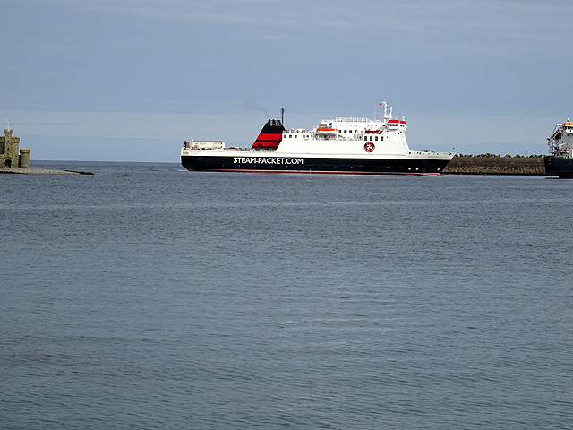

Douglas
Sea Terminal, Douglas, IM1 2RF. Check the port guide for parking and access. Opening times vary around sailing check-in, including autumn Sundays.
Douglas terminal guide ↗Find your ferry. Feel the sea breeze. Make time for the Isle of Man.
Compare published crossings from England and Northern Ireland, spot the gaps and find your next way aboard.
Find my crossingIsle of Man ferry timetable · Autumn 2026
Independent, open-source travel companion

An offline helper using local rules and published data. No remote AI model. Example: “next ferry from Liverpool 2026-11-07”.
England: 21 September–30 November 2026 · Larne: 2 September–30 November 2026
Last source review: · Dublin and other periods are not imported.
Independent compilation · no live prices, availability or real-time status · unaffiliated with Steam Packet and the Isle of Man Government. Confirm with the operator before travel.
Select a day to see its crossings. All departure and arrival times are local.
| Date | Departs | Arrives | Vessel |
|---|
A weekend escape, a journey home or the beginning of a longer adventure. Manx Sailings is part of the Mannin Knowledge Engine: an open-source project exploring clearer ways to discover all that is Isle of Man.
AI-generated design and code, with published timetable data from the Isle of Man Steam Packet Company. Powered by Promptus.ai · Explore 52.uk · Part of the 42.uk universe.
An independent project, unaffiliated with Steam Packet or the Isle of Man Government. The timetable helper runs locally using rules; it does not call a remote AI model. Check the operator before travelling.
Conditions in the Irish Sea can change. Wind, waves, their direction and port conditions all matter; a forecast is not a guarantee of comfort or permission to sail. Follow the Master and crew’s instructions. This tool does not estimate cancellation risk or predict vessel motion.
NHS motion-sickness advice ↗ · General self-care information, not individual medical advice.
Manannan is a high-speed craft; Manxman and Ben My Chree are conventional ferries. A shorter crossing does not guarantee less motion. Sea conditions and seating position affect experience on any vessel. Compare facilities below and ask the operator about your needs rather than assuming one ship will always be smoother.
On 4 October 2025, Steam Packet reported that Storm Amy affected operations and that a planned Heysham sailing was moved to Liverpool because of harbour wind conditions. This shows why the departure port as well as the timetable needs checking; it does not predict your crossing.
Confirm terminal opening hours, parking arrangements and transport connections on the official port page. Allow a buffer between the ferry and onward travel; connections are not guaranteed.
Sea Terminal, Douglas, IM1 2RF. Check the port guide for parking and access. Opening times vary around sailing check-in, including autumn Sundays.
Douglas terminal guide ↗Isle of Man Ferry Terminal, 1 Triskelion Way, L3 0BN. The operator suggests L3 0AY for satnavs that do not recognise the new terminal. Lime Street and Merseyrail connections require onward travel; check the terminal shuttle arrangements.
Liverpool access, parking & shuttle ↗Passenger Terminal, South Quay, LA3 2XE. Heysham Harbour rail station is beside the terminal. Check train times; proximity does not mean a train meets every ferry.
Heysham access & parking ↗Larne Port, BT40 1AS. Check the official terminal guide for parking, access and onward connections before travelling.
Larne terminal guide ↗Check current rail connections ↗
The operator lists last check-in as 45 minutes before departure for cars and their passengers, and 25 minutes for foot passengers. Opening times are port-specific: Douglas is approximately 90 minutes before sailing and Larne at least 90 minutes. Confirm your booking instructions and festival arrangements.
Official check-in instructions ↗The operator permits pets in vehicles without a carriage charge; passenger-deck pet accommodation must be arranged and capacity is limited. Once sailing, passengers ordinarily cannot return to the vehicle deck. Check the vessel-specific options, charges and route entry requirements before booking, including assistance-dog paperwork.
Official pet rules ↗Declare the full vehicle dimensions, including racks, trailers and other attachments. Larger vehicles and Manannan restrictions need direct confirmation; route and vessel limits differ. Do not rely on a single generic height limit.
Vehicle dimensions & booking guidance ↗Tell the operator about mobility, sensory or other assistance needs when booking. Contact it in advance to confirm boarding support, seating, lifts and any cabin or equipment requirements for the actual vessel.
Request passenger assistance ↗Keep your booking contact details up to date and watch the official sailing-status page. Published departures can change because of weather, tides, port conditions, maintenance or operational requirements. “No sailing listed” in this planner means no imported row, not a confirmed cancellation.
The operator’s cancellation guidance describes refund or transfer options. Follow the instructions for your booking and contact Steam Packet about eligibility and arrangements; this independent app cannot amend tickets or promise compensation.
Isle of Man reservations: +44 1624 661661 · UK: 08722 992 992 · Email reservations. Check charges and availability on the contact page.
The autumn patterns shown above describe this imported schedule only. Liverpool and Larne frequencies and vessels change across the season. TT and other busy periods need their own official timetable; this app does not extrapolate an autumn pattern to the rest of the year.
The company dates to 1830; its first Douglas–Liverpool crossing took place on 17 August that year. Modern service patterns are very different from the early steamers. Historical context is not evidence for a current departure.
Operator’s illustrated history ↗402 departures: 331 entries from the supplied Steam Packet UK autumn timetable, and 71 from the official Ireland autumn PDF. Rows are normalised into date, route, direction, departure, arrival and vessel fields. The planner filters this local dataset; the plain-English helper uses rules, not a remote model.
The Ireland PDF has a November-section Larne return printed as 16 October. That row is withheld rather than guessed. Dublin dates and periods outside the imported coverage remain unavailable. Times are local; clock changes can affect elapsed journey time.
Validation checks row structure, duplicate departures, coverage regressions, the withheld date and offline packaging. It cannot prove that a scheduled sailing will operate. Source review and website release dates are recorded separately.
Not throughout this timetable. Liverpool has daily sailings 21–28 September, generally Thursday–Monday from 29 September–21 October, daily sailings 22 October–2 November, and weekend sailings only from 7 November. No Liverpool sailings are listed on 3–6 November. Select an exact date to check.
Manannan’s last listed Liverpool sailings are on 2 November. Ben My Chree operates the Liverpool crossings on 7–8, 14–15, 21–22 and 28–29 November. Heysham service is reduced around those weekends; the two directions have different departure days.
Most listed Heysham crossings take 3 hours 45 minutes. Some take 4 hours 15 minutes. Listed Liverpool crossings take 2 hours 45 minutes on Manannan or 4 hours 30 minutes on Ben My Chree. The planner calculates the interval between the published local times; clock changes may affect elapsed journey time.
The planner shows the next departure listed for your route and checks whether the other English port has a departure on your selected date. These are timetable alternatives; availability, check-in, onward travel and live operating status must be confirmed with Steam Packet.
402 departures are included: 331 from the supplied UK timetable and 71 from the official Ireland autumn PDF. One inconsistent Ireland date is withheld. This independent tool covers Liverpool, Heysham and Larne; Dublin dates are not included. General route, freight, fleet and travel guidance was reviewed against the operator’s website on 7 October 2026. “No sailing” means no entry in that source, not a cancellation or a sold-out crossing. No live prices or availability are provided.
The official autumn PDF lists Manannan departures on Monday, Wednesday and Friday through 4 November. From 5 November, listed Isle of Man departures are Thursday and Sunday evenings on Ben My Chree; Larne returns are overnight Friday and Monday sailings. Times and directions differ, so select the exact route.
Dublin appears in the operator’s route directory, but the linked autumn PDF contains Larne entries only. This app has no confirmed Dublin dates. Belfast Port services ended in December 2025; Larne is the new Northern Ireland route, introduced in April 2026.
The Ireland PDF’s November section prints a Larne return as 16/10/2026, 01:00–06:15, Ben My Chree. This conflicts with the section and may be a typo. That single row is withheld from the planner: neither 16 October nor 16 November is assumed confirmed. Contact the operator before planning that departure.
Freight enquiries go through the operator’s Douglas and Heysham teams. Trade cars and vehicles used primarily for business may need freight booking. Passenger sailing times do not establish cargo acceptance or capacity.
Freight services, restrictions and forms · Ask the reservations team
Have your route, date, load type, vehicle length, height, width and weight ready. Ask about accompanied or unaccompanied carriage and any special requirements. The operator publishes separate arrangements for abnormal loads, livestock and dangerous goods; confirm acceptance and paperwork directly.
Online passenger booking does not replace freight approval. No freight rates or freight capacity are provided here.
Liverpool high-speed service with seating lounges, café/bar facilities, children’s play area and kennels. Also appears on the autumn Larne timetable. Ask the operator about the facilities available on your crossing.
Conventional ferry serving passenger and freight needs. The supplied autumn schedules assign it to Heysham, November Liverpool weekends and overnight Larne crossings.
The operator’s flagship has family and quiet areas, accessible facilities, dining and pet accommodation. It is not named in our supplied autumn timetable entries; check official status for substitutions.
Backup vessel providing additional freight capacity and maintenance cover. It has no departures in this app’s passenger timetable.
The operator lists last check-in as 45 minutes before departure for cars and their passengers, and 25 minutes for foot passengers. These are deadlines, not recommended arrival times. Check your booking and departure port for instructions.
Request accessibility support when booking, ideally at least 48 hours ahead. Pet arrangements differ by vessel. Confirm vehicle dimensions, pet accommodation and travel-document requirements before booking.
| Date | From | To | Departure | Arrival | Vessel |
|---|---|---|---|---|---|
| 2026-09-21 | Isle of Man | Heysham | 08:30 | 12:15 | Ben My Chree |
| 2026-09-21 | Isle of Man | Liverpool | 15:00 | 17:45 | Manannan |
| 2026-09-21 | Isle of Man | Heysham | 19:45 | 23:30 | Ben My Chree |
| 2026-09-21 | Isle of Man | Heysham | 22:00 | 01:45 (+1 day) | Ben My Chree |
| 2026-09-22 | Isle of Man | Heysham | 08:30 | 12:15 | Ben My Chree |
| 2026-09-22 | Isle of Man | Liverpool | 15:00 | 17:45 | Manannan |
| 2026-09-22 | Isle of Man | Heysham | 19:45 | 23:30 | Ben My Chree |
| 2026-09-23 | Isle of Man | Heysham | 08:30 | 12:15 | Ben My Chree |
| 2026-09-23 | Isle of Man | Liverpool | 15:00 | 17:45 | Manannan |
| 2026-09-23 | Isle of Man | Heysham | 19:45 | 23:30 | Ben My Chree |
| 2026-09-24 | Isle of Man | Heysham | 08:30 | 12:15 | Ben My Chree |
| 2026-09-24 | Isle of Man | Liverpool | 15:00 | 17:45 | Manannan |
| 2026-09-24 | Isle of Man | Heysham | 19:45 | 23:30 | Ben My Chree |
| 2026-09-25 | Isle of Man | Heysham | 08:30 | 12:15 | Ben My Chree |
| 2026-09-25 | Isle of Man | Liverpool | 15:00 | 17:45 | Manannan |
| 2026-09-25 | Isle of Man | Heysham | 19:45 | 23:30 | Ben My Chree |
| 2026-09-26 | Isle of Man | Heysham | 08:30 | 12:15 | Ben My Chree |
| 2026-09-26 | Isle of Man | Liverpool | 10:00 | 12:45 | Manannan |
| 2026-09-26 | Isle of Man | Heysham | 19:45 | 23:30 | Ben My Chree |
| 2026-09-27 | Isle of Man | Heysham | 08:30 | 12:15 | Ben My Chree |
| 2026-09-27 | Isle of Man | Liverpool | 15:00 | 17:45 | Manannan |
| 2026-09-27 | Isle of Man | Heysham | 20:00 | 23:45 | Ben My Chree |
| 2026-09-28 | Isle of Man | Heysham | 08:30 | 12:15 | Ben My Chree |
| 2026-09-28 | Isle of Man | Liverpool | 15:00 | 17:45 | Manannan |
| 2026-09-28 | Isle of Man | Heysham | 19:45 | 23:30 | Ben My Chree |
| 2026-09-29 | Isle of Man | Heysham | 08:30 | 12:15 | Ben My Chree |
| 2026-09-29 | Isle of Man | Heysham | 19:45 | 23:30 | Ben My Chree |
| 2026-09-30 | Isle of Man | Heysham | 08:30 | 12:15 | Ben My Chree |
| 2026-09-30 | Isle of Man | Heysham | 19:45 | 23:30 | Ben My Chree |
| 2026-10-01 | Isle of Man | Heysham | 08:30 | 12:15 | Ben My Chree |
| 2026-10-01 | Isle of Man | Liverpool | 15:00 | 17:45 | Manannan |
| 2026-10-01 | Isle of Man | Heysham | 19:45 | 23:30 | Ben My Chree |
| 2026-10-02 | Isle of Man | Heysham | 08:00 | 11:45 | Ben My Chree |
| 2026-10-02 | Isle of Man | Liverpool | 15:00 | 17:45 | Manannan |
| 2026-10-02 | Isle of Man | Heysham | 19:45 | 23:30 | Ben My Chree |
| 2026-10-03 | Isle of Man | Heysham | 08:30 | 12:15 | Ben My Chree |
| 2026-10-03 | Isle of Man | Liverpool | 10:00 | 12:45 | Manannan |
| 2026-10-03 | Isle of Man | Heysham | 19:30 | 23:15 | Ben My Chree |
| 2026-10-04 | Isle of Man | Heysham | 08:00 | 11:45 | Ben My Chree |
| 2026-10-04 | Isle of Man | Liverpool | 15:00 | 17:45 | Manannan |
| 2026-10-04 | Isle of Man | Heysham | 19:30 | 23:15 | Ben My Chree |
| 2026-10-05 | Isle of Man | Heysham | 08:00 | 11:45 | Ben My Chree |
| 2026-10-05 | Isle of Man | Liverpool | 15:00 | 17:45 | Manannan |
| 2026-10-05 | Isle of Man | Heysham | 19:15 | 23:00 | Ben My Chree |
| 2026-10-06 | Isle of Man | Heysham | 08:00 | 11:45 | Ben My Chree |
| 2026-10-06 | Isle of Man | Heysham | 19:15 | 23:00 | Ben My Chree |
| 2026-10-07 | Isle of Man | Heysham | 08:00 | 11:45 | Ben My Chree |
| 2026-10-07 | Isle of Man | Heysham | 19:15 | 23:00 | Ben My Chree |
| 2026-10-08 | Isle of Man | Heysham | 08:00 | 11:45 | Ben My Chree |
| 2026-10-08 | Isle of Man | Liverpool | 15:00 | 17:45 | Manannan |
| 2026-10-08 | Isle of Man | Heysham | 19:15 | 23:00 | Ben My Chree |
| 2026-10-09 | Isle of Man | Heysham | 08:00 | 11:45 | Ben My Chree |
| 2026-10-09 | Isle of Man | Liverpool | 15:00 | 17:45 | Manannan |
| 2026-10-09 | Isle of Man | Heysham | 19:30 | 23:15 | Ben My Chree |
| 2026-10-10 | Isle of Man | Heysham | 08:00 | 11:45 | Ben My Chree |
| 2026-10-10 | Isle of Man | Liverpool | 10:00 | 12:45 | Manannan |
| 2026-10-10 | Isle of Man | Heysham | 19:15 | 23:00 | Ben My Chree |
| 2026-10-11 | Isle of Man | Heysham | 08:00 | 11:45 | Ben My Chree |
| 2026-10-11 | Isle of Man | Liverpool | 15:00 | 17:45 | Manannan |
| 2026-10-11 | Isle of Man | Heysham | 19:30 | 23:15 | Ben My Chree |
| 2026-10-12 | Isle of Man | Heysham | 08:00 | 11:45 | Ben My Chree |
| 2026-10-12 | Isle of Man | Liverpool | 15:00 | 17:45 | Manannan |
| 2026-10-12 | Isle of Man | Heysham | 19:15 | 23:00 | Ben My Chree |
| 2026-10-13 | Isle of Man | Heysham | 08:00 | 11:45 | Ben My Chree |
| 2026-10-13 | Isle of Man | Heysham | 19:15 | 23:00 | Ben My Chree |
| 2026-10-14 | Isle of Man | Heysham | 08:00 | 11:45 | Ben My Chree |
| 2026-10-14 | Isle of Man | Heysham | 19:15 | 23:00 | Ben My Chree |
| 2026-10-15 | Isle of Man | Heysham | 08:00 | 11:45 | Ben My Chree |
| 2026-10-15 | Isle of Man | Liverpool | 15:00 | 17:45 | Manannan |
| 2026-10-15 | Isle of Man | Heysham | 19:15 | 23:00 | Ben My Chree |
| 2026-10-16 | Isle of Man | Heysham | 08:00 | 11:45 | Ben My Chree |
| 2026-10-16 | Isle of Man | Liverpool | 15:00 | 17:45 | Manannan |
| 2026-10-16 | Isle of Man | Heysham | 19:30 | 23:15 | Ben My Chree |
| 2026-10-17 | Isle of Man | Heysham | 08:30 | 12:15 | Ben My Chree |
| 2026-10-17 | Isle of Man | Liverpool | 10:00 | 12:45 | Manannan |
| 2026-10-17 | Isle of Man | Heysham | 19:30 | 23:15 | Ben My Chree |
| 2026-10-18 | Isle of Man | Heysham | 08:00 | 11:45 | Ben My Chree |
| 2026-10-18 | Isle of Man | Liverpool | 15:00 | 17:45 | Manannan |
| 2026-10-18 | Isle of Man | Heysham | 19:30 | 23:15 | Ben My Chree |
| 2026-10-19 | Isle of Man | Heysham | 08:00 | 11:45 | Ben My Chree |
| 2026-10-19 | Isle of Man | Liverpool | 15:00 | 17:45 | Manannan |
| 2026-10-19 | Isle of Man | Heysham | 19:15 | 23:00 | Ben My Chree |
| 2026-10-20 | Isle of Man | Heysham | 08:00 | 11:45 | Ben My Chree |
| 2026-10-20 | Isle of Man | Heysham | 19:15 | 23:00 | Ben My Chree |
| 2026-10-21 | Isle of Man | Heysham | 08:00 | 11:45 | Ben My Chree |
| 2026-10-21 | Isle of Man | Heysham | 19:15 | 23:00 | Ben My Chree |
| 2026-10-22 | Isle of Man | Heysham | 08:00 | 11:45 | Ben My Chree |
| 2026-10-22 | Isle of Man | Liverpool | 15:00 | 17:45 | Manannan |
| 2026-10-22 | Isle of Man | Heysham | 19:15 | 23:00 | Ben My Chree |
| 2026-10-23 | Isle of Man | Heysham | 08:00 | 11:45 | Ben My Chree |
| 2026-10-23 | Isle of Man | Liverpool | 15:00 | 17:45 | Manannan |
| 2026-10-23 | Isle of Man | Heysham | 19:30 | 23:15 | Ben My Chree |
| 2026-10-24 | Isle of Man | Heysham | 08:30 | 12:15 | Ben My Chree |
| 2026-10-24 | Isle of Man | Liverpool | 10:00 | 12:45 | Manannan |
| 2026-10-24 | Isle of Man | Heysham | 19:30 | 23:15 | Ben My Chree |
| 2026-10-25 | Isle of Man | Heysham | 08:00 | 11:45 | Ben My Chree |
| 2026-10-25 | Isle of Man | Liverpool | 15:00 | 17:45 | Manannan |
| 2026-10-25 | Isle of Man | Heysham | 19:30 | 23:15 | Ben My Chree |
| 2026-10-26 | Isle of Man | Heysham | 08:00 | 11:45 | Ben My Chree |
| 2026-10-26 | Isle of Man | Liverpool | 15:00 | 17:45 | Manannan |
| 2026-10-26 | Isle of Man | Heysham | 19:15 | 23:00 | Ben My Chree |
| 2026-10-27 | Isle of Man | Heysham | 08:00 | 11:45 | Ben My Chree |
| 2026-10-27 | Isle of Man | Liverpool | 15:00 | 17:45 | Manannan |
| 2026-10-27 | Isle of Man | Heysham | 19:15 | 23:00 | Ben My Chree |
| 2026-10-28 | Isle of Man | Heysham | 08:00 | 11:45 | Ben My Chree |
| 2026-10-28 | Isle of Man | Liverpool | 15:00 | 17:45 | Manannan |
| 2026-10-28 | Isle of Man | Heysham | 19:15 | 23:00 | Ben My Chree |
| 2026-10-29 | Isle of Man | Heysham | 08:00 | 11:45 | Ben My Chree |
| 2026-10-29 | Isle of Man | Liverpool | 15:00 | 17:45 | Manannan |
| 2026-10-29 | Isle of Man | Heysham | 19:15 | 23:00 | Ben My Chree |
| 2026-10-30 | Isle of Man | Heysham | 08:00 | 11:45 | Ben My Chree |
| 2026-10-30 | Isle of Man | Liverpool | 15:00 | 17:45 | Manannan |
| 2026-10-30 | Isle of Man | Heysham | 19:15 | 23:00 | Ben My Chree |
| 2026-10-31 | Isle of Man | Heysham | 08:00 | 11:45 | Ben My Chree |
| 2026-10-31 | Isle of Man | Liverpool | 10:00 | 12:45 | Manannan |
| 2026-10-31 | Isle of Man | Heysham | 19:15 | 23:00 | Ben My Chree |
| 2026-11-01 | Isle of Man | Heysham | 08:00 | 11:45 | Ben My Chree |
| 2026-11-01 | Isle of Man | Liverpool | 15:00 | 17:45 | Manannan |
| 2026-11-01 | Isle of Man | Heysham | 19:30 | 23:15 | Ben My Chree |
| 2026-11-02 | Isle of Man | Heysham | 08:00 | 11:45 | Ben My Chree |
| 2026-11-02 | Isle of Man | Liverpool | 15:00 | 17:45 | Manannan |
| 2026-11-02 | Isle of Man | Heysham | 19:15 | 23:00 | Ben My Chree |
| 2026-11-03 | Isle of Man | Heysham | 08:00 | 11:45 | Ben My Chree |
| 2026-11-03 | Isle of Man | Heysham | 19:15 | 23:00 | Ben My Chree |
| 2026-11-04 | Isle of Man | Heysham | 08:00 | 11:45 | Ben My Chree |
| 2026-11-04 | Isle of Man | Heysham | 19:15 | 23:00 | Ben My Chree |
| 2026-11-05 | Isle of Man | Heysham | 08:00 | 11:45 | Ben My Chree |
| 2026-11-06 | Isle of Man | Heysham | 08:00 | 11:45 | Ben My Chree |
| 2026-11-06 | Isle of Man | Heysham | 19:15 | 23:00 | Ben My Chree |
| 2026-11-07 | Isle of Man | Liverpool | 07:30 | 12:00 | Ben My Chree |
| 2026-11-08 | Isle of Man | Liverpool | 07:00 | 11:30 | Ben My Chree |
| 2026-11-09 | Isle of Man | Heysham | 08:00 | 11:45 | Ben My Chree |
| 2026-11-09 | Isle of Man | Heysham | 19:15 | 23:00 | Ben My Chree |
| 2026-11-10 | Isle of Man | Heysham | 08:00 | 11:45 | Ben My Chree |
| 2026-11-10 | Isle of Man | Heysham | 19:15 | 23:00 | Ben My Chree |
| 2026-11-11 | Isle of Man | Heysham | 08:00 | 11:45 | Ben My Chree |
| 2026-11-11 | Isle of Man | Heysham | 19:15 | 23:00 | Ben My Chree |
| 2026-11-12 | Isle of Man | Heysham | 08:00 | 11:45 | Ben My Chree |
| 2026-11-13 | Isle of Man | Heysham | 08:00 | 11:45 | Ben My Chree |
| 2026-11-13 | Isle of Man | Heysham | 19:15 | 23:00 | Ben My Chree |
| 2026-11-14 | Isle of Man | Liverpool | 07:30 | 12:00 | Ben My Chree |
| 2026-11-15 | Isle of Man | Liverpool | 07:00 | 11:30 | Ben My Chree |
| 2026-11-16 | Isle of Man | Heysham | 08:00 | 11:45 | Ben My Chree |
| 2026-11-16 | Isle of Man | Heysham | 19:15 | 23:00 | Ben My Chree |
| 2026-11-17 | Isle of Man | Heysham | 08:00 | 11:45 | Ben My Chree |
| 2026-11-17 | Isle of Man | Heysham | 19:15 | 23:00 | Ben My Chree |
| 2026-11-18 | Isle of Man | Heysham | 08:00 | 11:45 | Ben My Chree |
| 2026-11-18 | Isle of Man | Heysham | 19:15 | 23:00 | Ben My Chree |
| 2026-11-19 | Isle of Man | Heysham | 08:00 | 11:45 | Ben My Chree |
| 2026-11-20 | Isle of Man | Heysham | 08:00 | 11:45 | Ben My Chree |
| 2026-11-20 | Isle of Man | Heysham | 19:15 | 23:00 | Ben My Chree |
| 2026-11-21 | Isle of Man | Liverpool | 07:30 | 12:00 | Ben My Chree |
| 2026-11-22 | Isle of Man | Liverpool | 07:00 | 11:30 | Ben My Chree |
| 2026-11-23 | Isle of Man | Heysham | 08:00 | 11:45 | Ben My Chree |
| 2026-11-23 | Isle of Man | Heysham | 19:15 | 23:00 | Ben My Chree |
| 2026-11-24 | Isle of Man | Heysham | 08:00 | 11:45 | Ben My Chree |
| 2026-11-24 | Isle of Man | Heysham | 19:15 | 23:00 | Ben My Chree |
| 2026-11-25 | Isle of Man | Heysham | 08:00 | 11:45 | Ben My Chree |
| 2026-11-25 | Isle of Man | Heysham | 19:15 | 23:00 | Ben My Chree |
| 2026-11-26 | Isle of Man | Heysham | 08:00 | 11:45 | Ben My Chree |
| 2026-11-27 | Isle of Man | Heysham | 08:00 | 11:45 | Ben My Chree |
| 2026-11-27 | Isle of Man | Heysham | 19:15 | 23:00 | Ben My Chree |
| 2026-11-28 | Isle of Man | Liverpool | 07:30 | 12:00 | Ben My Chree |
| 2026-11-29 | Isle of Man | Liverpool | 06:30 | 11:00 | Ben My Chree |
| 2026-11-30 | Isle of Man | Heysham | 08:00 | 11:45 | Ben My Chree |
| 2026-11-30 | Isle of Man | Heysham | 19:15 | 23:00 | Ben My Chree |
| 2026-09-21 | Heysham | Isle of Man | 02:15 | 06:00 | Ben My Chree |
| 2026-09-21 | Heysham | Isle of Man | 14:15 | 18:00 | Ben My Chree |
| 2026-09-21 | Liverpool | Isle of Man | 19:15 | 22:00 | Manannan |
| 2026-09-22 | Heysham | Isle of Man | 02:15 | 06:00 | Ben My Chree |
| 2026-09-22 | Heysham | Isle of Man | 14:15 | 18:00 | Ben My Chree |
| 2026-09-22 | Liverpool | Isle of Man | 19:15 | 22:00 | Manannan |
| 2026-09-23 | Heysham | Isle of Man | 02:15 | 06:00 | Ben My Chree |
| 2026-09-23 | Heysham | Isle of Man | 14:15 | 18:00 | Ben My Chree |
| 2026-09-23 | Liverpool | Isle of Man | 19:15 | 22:00 | Manannan |
| 2026-09-24 | Heysham | Isle of Man | 02:15 | 06:00 | Ben My Chree |
| 2026-09-24 | Heysham | Isle of Man | 14:15 | 18:00 | Ben My Chree |
| 2026-09-24 | Liverpool | Isle of Man | 19:15 | 22:00 | Manannan |
| 2026-09-25 | Heysham | Isle of Man | 02:15 | 06:00 | Ben My Chree |
| 2026-09-25 | Heysham | Isle of Man | 14:15 | 18:00 | Ben My Chree |
| 2026-09-25 | Liverpool | Isle of Man | 19:15 | 22:00 | Manannan |
| 2026-09-26 | Heysham | Isle of Man | 02:15 | 06:00 | Ben My Chree |
| 2026-09-26 | Heysham | Isle of Man | 14:15 | 18:00 | Ben My Chree |
| 2026-09-26 | Liverpool | Isle of Man | 19:15 | 22:00 | Manannan |
| 2026-09-27 | Heysham | Isle of Man | 02:15 | 06:00 | Ben My Chree |
| 2026-09-27 | Heysham | Isle of Man | 14:15 | 18:00 | Ben My Chree |
| 2026-09-27 | Liverpool | Isle of Man | 19:15 | 22:00 | Manannan |
| 2026-09-28 | Heysham | Isle of Man | 02:15 | 06:00 | Ben My Chree |
| 2026-09-28 | Heysham | Isle of Man | 14:15 | 18:00 | Ben My Chree |
| 2026-09-28 | Liverpool | Isle of Man | 19:15 | 22:00 | Manannan |
| 2026-09-29 | Heysham | Isle of Man | 02:15 | 06:00 | Ben My Chree |
| 2026-09-29 | Heysham | Isle of Man | 14:15 | 18:00 | Ben My Chree |
| 2026-09-30 | Heysham | Isle of Man | 02:15 | 06:00 | Ben My Chree |
| 2026-09-30 | Heysham | Isle of Man | 14:15 | 18:00 | Ben My Chree |
| 2026-10-01 | Heysham | Isle of Man | 02:15 | 06:00 | Ben My Chree |
| 2026-10-01 | Heysham | Isle of Man | 14:15 | 18:00 | Ben My Chree |
| 2026-10-01 | Liverpool | Isle of Man | 19:15 | 22:00 | Manannan |
| 2026-10-02 | Heysham | Isle of Man | 02:15 | 06:00 | Ben My Chree |
| 2026-10-02 | Heysham | Isle of Man | 14:15 | 18:00 | Ben My Chree |
| 2026-10-02 | Liverpool | Isle of Man | 19:15 | 22:00 | Manannan |
| 2026-10-03 | Heysham | Isle of Man | 02:15 | 06:00 | Ben My Chree |
| 2026-10-03 | Heysham | Isle of Man | 14:15 | 18:00 | Ben My Chree |
| 2026-10-03 | Liverpool | Isle of Man | 19:15 | 22:00 | Manannan |
| 2026-10-04 | Heysham | Isle of Man | 01:45 | 06:00 | Ben My Chree |
| 2026-10-04 | Heysham | Isle of Man | 13:45 | 17:30 | Ben My Chree |
| 2026-10-04 | Liverpool | Isle of Man | 19:15 | 22:00 | Manannan |
| 2026-10-05 | Heysham | Isle of Man | 02:15 | 06:00 | Ben My Chree |
| 2026-10-05 | Heysham | Isle of Man | 13:45 | 17:30 | Ben My Chree |
| 2026-10-05 | Liverpool | Isle of Man | 19:15 | 22:00 | Manannan |
| 2026-10-06 | Heysham | Isle of Man | 02:15 | 06:00 | Ben My Chree |
| 2026-10-06 | Heysham | Isle of Man | 13:45 | 17:30 | Ben My Chree |
| 2026-10-07 | Heysham | Isle of Man | 02:15 | 06:00 | Ben My Chree |
| 2026-10-07 | Heysham | Isle of Man | 13:45 | 17:30 | Ben My Chree |
| 2026-10-08 | Heysham | Isle of Man | 02:15 | 06:00 | Ben My Chree |
| 2026-10-08 | Heysham | Isle of Man | 13:45 | 17:30 | Ben My Chree |
| 2026-10-08 | Liverpool | Isle of Man | 19:15 | 22:00 | Manannan |
| 2026-10-09 | Heysham | Isle of Man | 02:15 | 06:00 | Ben My Chree |
| 2026-10-09 | Heysham | Isle of Man | 14:15 | 18:00 | Ben My Chree |
| 2026-10-09 | Liverpool | Isle of Man | 19:15 | 22:00 | Manannan |
| 2026-10-10 | Heysham | Isle of Man | 02:00 | 05:45 | Ben My Chree |
| 2026-10-10 | Heysham | Isle of Man | 13:45 | 17:30 | Ben My Chree |
| 2026-10-10 | Liverpool | Isle of Man | 19:15 | 22:00 | Manannan |
| 2026-10-11 | Heysham | Isle of Man | 01:45 | 06:00 | Ben My Chree |
| 2026-10-11 | Heysham | Isle of Man | 13:45 | 17:30 | Ben My Chree |
| 2026-10-11 | Liverpool | Isle of Man | 19:15 | 22:00 | Manannan |
| 2026-10-12 | Heysham | Isle of Man | 02:15 | 06:00 | Ben My Chree |
| 2026-10-12 | Heysham | Isle of Man | 13:45 | 17:30 | Ben My Chree |
| 2026-10-12 | Liverpool | Isle of Man | 19:15 | 22:00 | Manannan |
| 2026-10-13 | Heysham | Isle of Man | 02:15 | 06:00 | Ben My Chree |
| 2026-10-13 | Heysham | Isle of Man | 13:45 | 17:30 | Ben My Chree |
| 2026-10-14 | Heysham | Isle of Man | 02:15 | 06:00 | Ben My Chree |
| 2026-10-14 | Heysham | Isle of Man | 13:45 | 17:30 | Ben My Chree |
| 2026-10-15 | Heysham | Isle of Man | 02:15 | 06:00 | Ben My Chree |
| 2026-10-15 | Heysham | Isle of Man | 13:45 | 17:30 | Ben My Chree |
| 2026-10-15 | Liverpool | Isle of Man | 19:15 | 22:00 | Manannan |
| 2026-10-16 | Heysham | Isle of Man | 02:15 | 06:00 | Ben My Chree |
| 2026-10-16 | Heysham | Isle of Man | 13:45 | 17:30 | Ben My Chree |
| 2026-10-16 | Liverpool | Isle of Man | 19:15 | 22:00 | Manannan |
| 2026-10-17 | Heysham | Isle of Man | 02:00 | 05:45 | Ben My Chree |
| 2026-10-17 | Heysham | Isle of Man | 14:15 | 18:00 | Ben My Chree |
| 2026-10-17 | Liverpool | Isle of Man | 19:15 | 22:00 | Manannan |
| 2026-10-18 | Heysham | Isle of Man | 01:45 | 06:00 | Ben My Chree |
| 2026-10-18 | Heysham | Isle of Man | 13:45 | 17:30 | Ben My Chree |
| 2026-10-18 | Liverpool | Isle of Man | 19:15 | 22:00 | Manannan |
| 2026-10-19 | Heysham | Isle of Man | 02:15 | 06:00 | Ben My Chree |
| 2026-10-19 | Heysham | Isle of Man | 13:45 | 17:30 | Ben My Chree |
| 2026-10-19 | Liverpool | Isle of Man | 19:15 | 22:00 | Manannan |
| 2026-10-20 | Heysham | Isle of Man | 02:15 | 06:00 | Ben My Chree |
| 2026-10-20 | Heysham | Isle of Man | 13:45 | 17:30 | Ben My Chree |
| 2026-10-21 | Heysham | Isle of Man | 02:15 | 06:00 | Ben My Chree |
| 2026-10-21 | Heysham | Isle of Man | 13:45 | 17:30 | Ben My Chree |
| 2026-10-22 | Heysham | Isle of Man | 02:15 | 06:00 | Ben My Chree |
| 2026-10-22 | Heysham | Isle of Man | 13:45 | 17:30 | Ben My Chree |
| 2026-10-22 | Liverpool | Isle of Man | 19:15 | 22:00 | Manannan |
| 2026-10-23 | Heysham | Isle of Man | 02:15 | 06:00 | Ben My Chree |
| 2026-10-23 | Heysham | Isle of Man | 13:45 | 17:30 | Ben My Chree |
| 2026-10-23 | Liverpool | Isle of Man | 19:15 | 22:00 | Manannan |
| 2026-10-24 | Heysham | Isle of Man | 02:00 | 05:45 | Ben My Chree |
| 2026-10-24 | Heysham | Isle of Man | 14:15 | 18:00 | Ben My Chree |
| 2026-10-24 | Liverpool | Isle of Man | 19:15 | 22:00 | Manannan |
| 2026-10-25 | Heysham | Isle of Man | 01:45 | 06:00 | Ben My Chree |
| 2026-10-25 | Heysham | Isle of Man | 13:45 | 17:30 | Ben My Chree |
| 2026-10-25 | Liverpool | Isle of Man | 19:15 | 22:00 | Manannan |
| 2026-10-26 | Heysham | Isle of Man | 02:15 | 06:00 | Ben My Chree |
| 2026-10-26 | Heysham | Isle of Man | 13:45 | 17:30 | Ben My Chree |
| 2026-10-26 | Liverpool | Isle of Man | 19:15 | 22:00 | Manannan |
| 2026-10-27 | Heysham | Isle of Man | 02:15 | 06:00 | Ben My Chree |
| 2026-10-27 | Heysham | Isle of Man | 13:45 | 17:30 | Ben My Chree |
| 2026-10-27 | Liverpool | Isle of Man | 19:15 | 22:00 | Manannan |
| 2026-10-28 | Heysham | Isle of Man | 02:15 | 06:00 | Ben My Chree |
| 2026-10-28 | Heysham | Isle of Man | 13:45 | 17:30 | Ben My Chree |
| 2026-10-28 | Liverpool | Isle of Man | 19:15 | 22:00 | Manannan |
| 2026-10-29 | Heysham | Isle of Man | 02:15 | 06:00 | Ben My Chree |
| 2026-10-29 | Heysham | Isle of Man | 13:45 | 17:30 | Ben My Chree |
| 2026-10-29 | Liverpool | Isle of Man | 19:15 | 22:00 | Manannan |
| 2026-10-30 | Heysham | Isle of Man | 02:15 | 06:00 | Ben My Chree |
| 2026-10-30 | Heysham | Isle of Man | 13:45 | 17:30 | Ben My Chree |
| 2026-10-30 | Liverpool | Isle of Man | 19:15 | 22:00 | Manannan |
| 2026-10-31 | Heysham | Isle of Man | 01:45 | 06:00 | Ben My Chree |
| 2026-10-31 | Heysham | Isle of Man | 13:45 | 17:30 | Ben My Chree |
| 2026-10-31 | Liverpool | Isle of Man | 19:15 | 22:00 | Manannan |
| 2026-11-01 | Heysham | Isle of Man | 01:45 | 06:00 | Ben My Chree |
| 2026-11-01 | Heysham | Isle of Man | 13:45 | 17:30 | Ben My Chree |
| 2026-11-01 | Liverpool | Isle of Man | 19:15 | 22:00 | Manannan |
| 2026-11-02 | Heysham | Isle of Man | 02:15 | 06:00 | Ben My Chree |
| 2026-11-02 | Heysham | Isle of Man | 13:45 | 17:30 | Ben My Chree |
| 2026-11-02 | Liverpool | Isle of Man | 19:15 | 22:00 | Manannan |
| 2026-11-03 | Heysham | Isle of Man | 02:15 | 06:00 | Ben My Chree |
| 2026-11-03 | Heysham | Isle of Man | 13:45 | 17:30 | Ben My Chree |
| 2026-11-04 | Heysham | Isle of Man | 02:15 | 06:00 | Ben My Chree |
| 2026-11-04 | Heysham | Isle of Man | 13:45 | 17:30 | Ben My Chree |
| 2026-11-05 | Heysham | Isle of Man | 02:15 | 06:00 | Ben My Chree |
| 2026-11-05 | Heysham | Isle of Man | 13:45 | 17:30 | Ben My Chree |
| 2026-11-06 | Heysham | Isle of Man | 13:45 | 17:30 | Ben My Chree |
| 2026-11-07 | Heysham | Isle of Man | 01:45 | 06:00 | Ben My Chree |
| 2026-11-07 | Liverpool | Isle of Man | 19:00 | 23:30 | Ben My Chree |
| 2026-11-08 | Liverpool | Isle of Man | 13:30 | 18:00 | Ben My Chree |
| 2026-11-09 | Heysham | Isle of Man | 13:45 | 17:30 | Ben My Chree |
| 2026-11-10 | Heysham | Isle of Man | 02:15 | 06:00 | Ben My Chree |
| 2026-11-10 | Heysham | Isle of Man | 13:45 | 17:30 | Ben My Chree |
| 2026-11-11 | Heysham | Isle of Man | 02:15 | 06:00 | Ben My Chree |
| 2026-11-11 | Heysham | Isle of Man | 13:45 | 17:30 | Ben My Chree |
| 2026-11-12 | Heysham | Isle of Man | 02:15 | 06:00 | Ben My Chree |
| 2026-11-12 | Heysham | Isle of Man | 13:45 | 17:30 | Ben My Chree |
| 2026-11-13 | Heysham | Isle of Man | 13:45 | 17:30 | Ben My Chree |
| 2026-11-14 | Heysham | Isle of Man | 01:45 | 06:00 | Ben My Chree |
| 2026-11-14 | Liverpool | Isle of Man | 19:00 | 23:30 | Ben My Chree |
| 2026-11-15 | Liverpool | Isle of Man | 13:30 | 18:00 | Ben My Chree |
| 2026-11-16 | Heysham | Isle of Man | 13:45 | 17:30 | Ben My Chree |
| 2026-11-17 | Heysham | Isle of Man | 02:15 | 06:00 | Ben My Chree |
| 2026-11-17 | Heysham | Isle of Man | 13:45 | 17:30 | Ben My Chree |
| 2026-11-18 | Heysham | Isle of Man | 02:15 | 06:00 | Ben My Chree |
| 2026-11-18 | Heysham | Isle of Man | 13:45 | 17:30 | Ben My Chree |
| 2026-11-19 | Heysham | Isle of Man | 02:15 | 06:00 | Ben My Chree |
| 2026-11-19 | Heysham | Isle of Man | 13:45 | 17:30 | Ben My Chree |
| 2026-11-20 | Heysham | Isle of Man | 13:45 | 17:30 | Ben My Chree |
| 2026-11-21 | Heysham | Isle of Man | 01:45 | 06:00 | Ben My Chree |
| 2026-11-21 | Liverpool | Isle of Man | 19:00 | 23:30 | Ben My Chree |
| 2026-11-22 | Liverpool | Isle of Man | 13:30 | 18:00 | Ben My Chree |
| 2026-11-23 | Heysham | Isle of Man | 13:45 | 17:30 | Ben My Chree |
| 2026-11-24 | Heysham | Isle of Man | 02:15 | 06:00 | Ben My Chree |
| 2026-11-24 | Heysham | Isle of Man | 13:45 | 17:30 | Ben My Chree |
| 2026-11-25 | Heysham | Isle of Man | 02:15 | 06:00 | Ben My Chree |
| 2026-11-25 | Heysham | Isle of Man | 13:45 | 17:30 | Ben My Chree |
| 2026-11-26 | Heysham | Isle of Man | 02:15 | 06:00 | Ben My Chree |
| 2026-11-26 | Heysham | Isle of Man | 13:45 | 17:30 | Ben My Chree |
| 2026-11-27 | Heysham | Isle of Man | 13:45 | 17:30 | Ben My Chree |
| 2026-11-28 | Heysham | Isle of Man | 01:45 | 06:00 | Ben My Chree |
| 2026-11-28 | Liverpool | Isle of Man | 19:00 | 23:30 | Ben My Chree |
| 2026-11-29 | Liverpool | Isle of Man | 13:30 | 18:00 | Ben My Chree |
| 2026-11-30 | Heysham | Isle of Man | 13:45 | 17:30 | Ben My Chree |
| 2026-09-02 | Isle of Man | Larne | 06:45 | 09:45 | Manannan |
| 2026-09-02 | Larne | Isle of Man | 10:45 | 13:30 | Manannan |
| 2026-09-04 | Isle of Man | Larne | 06:45 | 09:45 | Manannan |
| 2026-09-04 | Larne | Isle of Man | 10:45 | 13:30 | Manannan |
| 2026-09-07 | Isle of Man | Larne | 06:45 | 09:45 | Manannan |
| 2026-09-07 | Larne | Isle of Man | 10:45 | 13:30 | Manannan |
| 2026-09-09 | Isle of Man | Larne | 06:45 | 09:45 | Manannan |
| 2026-09-09 | Larne | Isle of Man | 10:45 | 13:30 | Manannan |
| 2026-09-11 | Isle of Man | Larne | 06:45 | 09:45 | Manannan |
| 2026-09-11 | Larne | Isle of Man | 10:45 | 13:30 | Manannan |
| 2026-09-14 | Isle of Man | Larne | 06:45 | 09:45 | Manannan |
| 2026-09-14 | Larne | Isle of Man | 10:45 | 13:30 | Manannan |
| 2026-09-16 | Isle of Man | Larne | 06:45 | 09:45 | Manannan |
| 2026-09-16 | Larne | Isle of Man | 10:45 | 13:30 | Manannan |
| 2026-09-18 | Isle of Man | Larne | 06:45 | 09:45 | Manannan |
| 2026-09-18 | Larne | Isle of Man | 10:45 | 13:30 | Manannan |
| 2026-09-21 | Isle of Man | Larne | 06:45 | 09:45 | Manannan |
| 2026-09-21 | Larne | Isle of Man | 10:45 | 13:30 | Manannan |
| 2026-09-23 | Isle of Man | Larne | 06:45 | 09:45 | Manannan |
| 2026-09-23 | Larne | Isle of Man | 10:45 | 13:30 | Manannan |
| 2026-09-25 | Isle of Man | Larne | 06:45 | 09:45 | Manannan |
| 2026-09-25 | Larne | Isle of Man | 10:45 | 13:30 | Manannan |
| 2026-09-28 | Isle of Man | Larne | 06:45 | 09:45 | Manannan |
| 2026-09-28 | Larne | Isle of Man | 10:45 | 13:30 | Manannan |
| 2026-09-30 | Isle of Man | Larne | 06:45 | 09:45 | Manannan |
| 2026-09-30 | Larne | Isle of Man | 10:45 | 13:30 | Manannan |
| 2026-10-02 | Isle of Man | Larne | 06:45 | 09:45 | Manannan |
| 2026-10-02 | Larne | Isle of Man | 10:45 | 13:30 | Manannan |
| 2026-10-05 | Isle of Man | Larne | 06:45 | 09:45 | Manannan |
| 2026-10-05 | Larne | Isle of Man | 10:45 | 13:30 | Manannan |
| 2026-10-07 | Isle of Man | Larne | 06:45 | 09:45 | Manannan |
| 2026-10-07 | Larne | Isle of Man | 10:45 | 13:30 | Manannan |
| 2026-10-09 | Isle of Man | Larne | 06:45 | 09:45 | Manannan |
| 2026-10-09 | Larne | Isle of Man | 10:45 | 13:30 | Manannan |
| 2026-10-12 | Isle of Man | Larne | 06:45 | 09:45 | Manannan |
| 2026-10-12 | Larne | Isle of Man | 10:45 | 13:30 | Manannan |
| 2026-10-14 | Isle of Man | Larne | 06:45 | 09:45 | Manannan |
| 2026-10-14 | Larne | Isle of Man | 10:45 | 13:30 | Manannan |
| 2026-10-16 | Isle of Man | Larne | 06:45 | 09:45 | Manannan |
| 2026-10-16 | Larne | Isle of Man | 10:45 | 13:30 | Manannan |
| 2026-10-19 | Isle of Man | Larne | 06:45 | 09:45 | Manannan |
| 2026-10-19 | Larne | Isle of Man | 10:45 | 13:30 | Manannan |
| 2026-10-21 | Isle of Man | Larne | 06:45 | 09:45 | Manannan |
| 2026-10-21 | Larne | Isle of Man | 10:45 | 13:30 | Manannan |
| 2026-10-23 | Isle of Man | Larne | 06:45 | 09:45 | Manannan |
| 2026-10-23 | Larne | Isle of Man | 10:45 | 13:30 | Manannan |
| 2026-10-26 | Isle of Man | Larne | 06:45 | 09:45 | Manannan |
| 2026-10-26 | Larne | Isle of Man | 10:45 | 13:30 | Manannan |
| 2026-10-28 | Isle of Man | Larne | 06:45 | 09:45 | Manannan |
| 2026-10-28 | Larne | Isle of Man | 10:45 | 13:30 | Manannan |
| 2026-10-30 | Isle of Man | Larne | 06:45 | 09:45 | Manannan |
| 2026-10-30 | Larne | Isle of Man | 10:45 | 13:30 | Manannan |
| 2026-11-02 | Isle of Man | Larne | 06:45 | 09:45 | Manannan |
| 2026-11-02 | Larne | Isle of Man | 10:45 | 13:30 | Manannan |
| 2026-11-04 | Isle of Man | Larne | 06:45 | 09:45 | Manannan |
| 2026-11-04 | Larne | Isle of Man | 10:45 | 13:30 | Manannan |
| 2026-11-05 | Isle of Man | Larne | 19:00 | 00:15 (+1 day) | Ben My Chree |
| 2026-11-08 | Isle of Man | Larne | 19:00 | 00:15 (+1 day) | Ben My Chree |
| 2026-11-12 | Isle of Man | Larne | 19:00 | 00:15 (+1 day) | Ben My Chree |
| 2026-11-15 | Isle of Man | Larne | 19:00 | 00:15 (+1 day) | Ben My Chree |
| 2026-11-19 | Isle of Man | Larne | 19:00 | 00:15 (+1 day) | Ben My Chree |
| 2026-11-22 | Isle of Man | Larne | 19:00 | 00:15 (+1 day) | Ben My Chree |
| 2026-11-26 | Isle of Man | Larne | 19:00 | 00:15 (+1 day) | Ben My Chree |
| 2026-11-29 | Isle of Man | Larne | 19:00 | 00:15 (+1 day) | Ben My Chree |
| 2026-11-06 | Larne | Isle of Man | 01:00 | 06:15 | Ben My Chree |
| 2026-11-09 | Larne | Isle of Man | 01:00 | 06:15 | Ben My Chree |
| 2026-11-13 | Larne | Isle of Man | 01:00 | 06:15 | Ben My Chree |
| 2026-11-20 | Larne | Isle of Man | 01:00 | 06:15 | Ben My Chree |
| 2026-11-23 | Larne | Isle of Man | 01:00 | 06:15 | Ben My Chree |
| 2026-11-27 | Larne | Isle of Man | 01:00 | 06:15 | Ben My Chree |
| 2026-11-30 | Larne | Isle of Man | 01:00 | 06:15 | Ben My Chree |